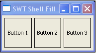

The visual editor makes it easy to work with the SWT FillLayout manager.
The SWT Fill layout manager simply lays out components in order, filling the entire space of the container. The components do not wrap, but are simply resized to fit the space, unless the verticalScroll or horizontalScroll properties are set.
In addition, the Fill layout has margin height, margin width, and spacing properties that affect the spacing of components within the container.
Also, you can set the type to either vertical or horizontal to dictate how the components are laid out in relation to each other. The following image shows a horizontal FillLayout with margin height, margin width, and spacing each set to 5:

To work with FillLayout: